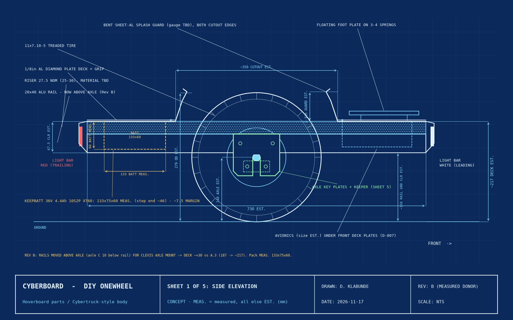
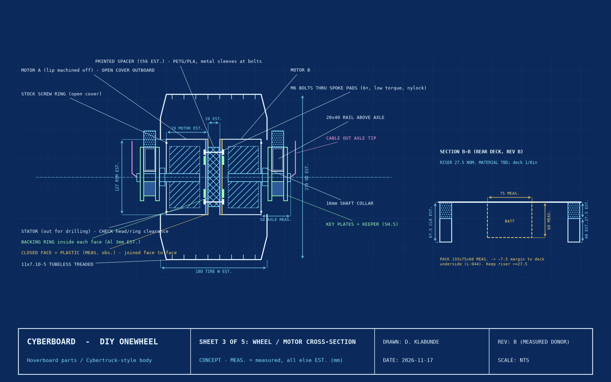
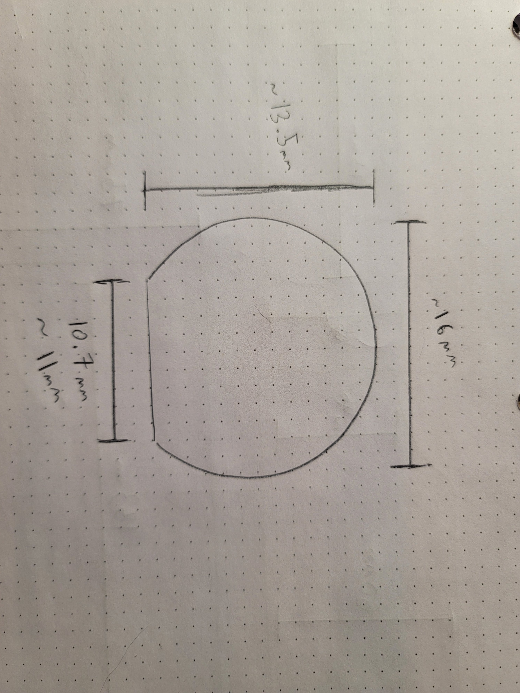

CyberBoard
A DIY ultra-minimal one-wheel electric board built from a used hoverboard.
Lead designer & builder · Oct 2026 – present
Problem
Build a rideable single-wheel board with a smooth, sharp-edged brushed-aluminum look on a tight budget and basic tools.
Constraints
- Budget $150–200 total
- Tools: older 3D printer (PLA), FreeCAD, household drill
- Serviceable: top plates on screws into rivet nuts
- Treaded go-kart tire, 260 mm OD × 170 mm wide
Key result
Teardown is underway. The first stator came out after about an hour stuck in the rotor. The axle is measured, Rev B is drawn, and axle mount D-011 is proposed, not chosen. The tire is picked and not here yet. No finished-board ride. $88.99 of $150–200 spent.
Measured parameters
| Parameter | Value | Basis |
|---|---|---|
| Axle | D-profile, one flat: ~16 mm round, 13.5 mm to the flat, flat ~10.7 mm wide, ~50 mm stick-out. The flat runs nearly the full stick-out | Measured |
| Tire | Treaded go-kart, 260 mm OD × 170 mm wide | Listing. Not bought yet |
| Air valve | Through the printed spacer band. Short metal tubeless stem | Planned. Stem to buy |
| Deck height | ~217 mm EST. (was ~187). The 260 mm tire would sit ~9.5 mm lower | EST. Check the tire on arrival |
| Battery | 36V 4.4Ah, ~133 × 75 × 60 mm, ~7.5 mm left under the deck | Measured |
| Motor join | Closed face to closed face, printed spacer, M6 rods. Axles point out to the rails | Observed on the open motor |
Results
| Check | Result |
|---|---|
| Donor pack | Fail. ~0.7 V, treated as dead |
| Power-on on the new pack | Pass. Both motors drive and the board self-balances |
| Tire removal | Would not come off. Cut off, and the boards are separated |
| Motor 1 stator | Stuck in the rotor, then out after about an hour. Motor 2 is still in |
| Axle | Measured. See the table above |
| Go-kart tire | Picked at 260 × 170 mm. Not bought yet |
| Axle mount D-011 | Proposed, not chosen |
Failure and fix
The tire would not come off the hub, so I cut it off and separated the boards. With the motor open, the stator stayed in the rotor. The magnets hold it hard. After about an hour I pulled the first stator out by hand. It has to come out: the two motors join closed face to closed face, with a printed spacer and M6 rods, and the axles point out to the rails. Motor 2 is next.
Proposed axle mount
Proposed, not chosen. D-011 is on the Rev B sheets so the measured axle has a place to go. I have not selected it.
Per side, D-011 is two 1/4 in aluminum key plates on the faces of the 20×40 rail, each with an open-bottom D-slot, plus a keeper block under the axle and a shaft collar for axial location. The axle tip stays open so the motor cable can unplug there. The wheel drops out after the keeper bolts come off. Putting the rails above the axle is what raises the deck from ~187 mm to ~217 mm (EST.).
STAR
Situation
Commercial one-wheel boards cost far more than my budget.
Task
Design and build one from a ~$40 used 6.5" 36V hoverboard.
Action
- Two hub motors as the rim, closed face to closed face, for a 260 × 170 mm treaded go-kart tire
- Rev B rails sit above the measured D-profile axle. Mount D-011 is only a proposal
- Dead donor pack replaced by a measured 36V 4.4Ah pack under the deck
- Direction-aware end lights, and top plates that come off for the electronics
Result
The donor board runs on the new pack. Teardown has started, the axle is measured, and Rev B is drawn. No finished-board ride data yet.
Visuals
Rev B, 17 Nov 2026. Sizes marked EST. are still estimates. The axle mount drawn on these sheets is D-011, proposed, not chosen.






Next steps
- Pull the second stator. Keep metal chips off the magnets
- Choose or reject D-011. It is only proposed
- Buy the tire and a short metal tubeless stem. Run the air valve through the printed spacer band, and seal the spacer and both motor seams
- When the tire arrives, check it against 260 mm OD × 170 mm wide
- Riser material and deck finish are still open